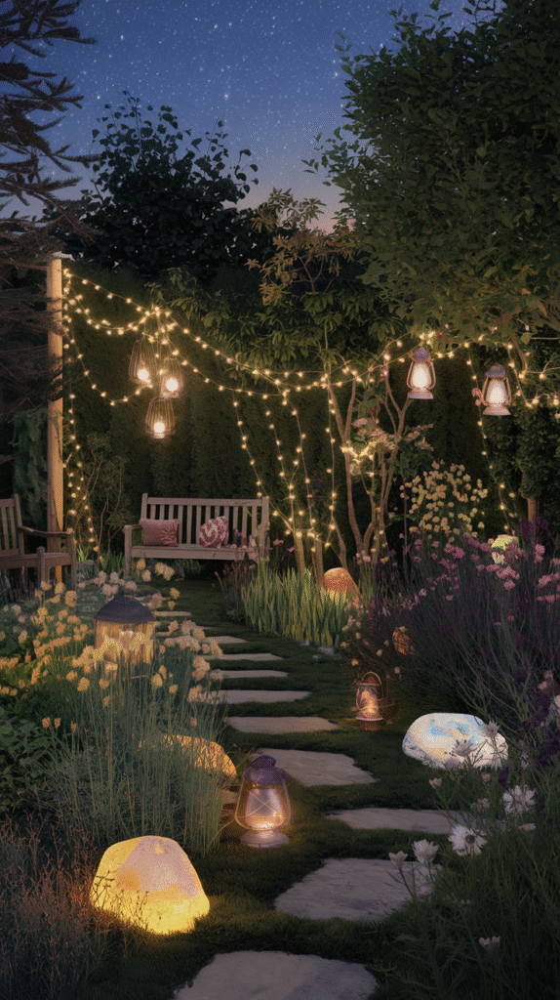
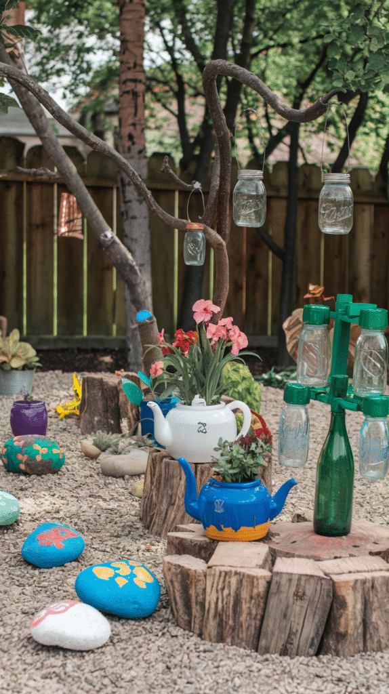
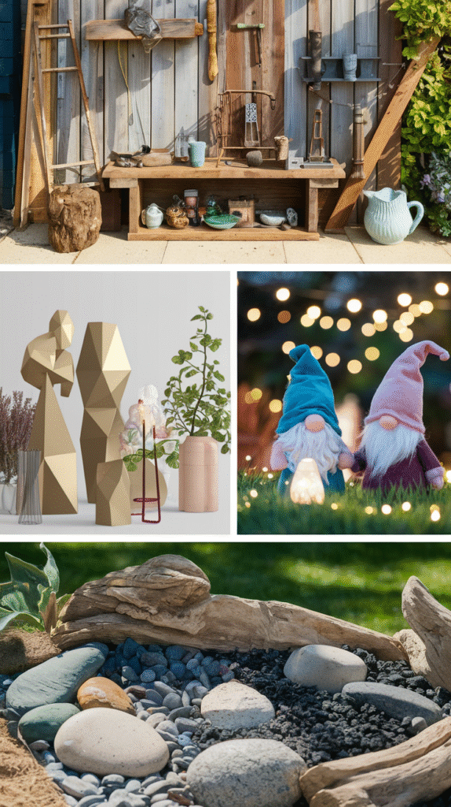
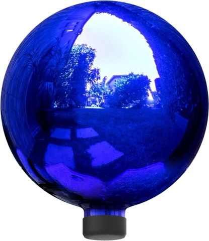
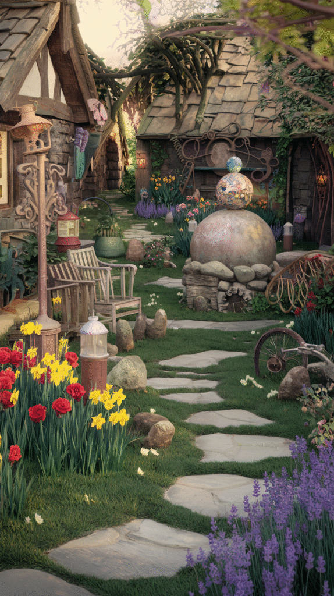

Garden art can transform an outdoor space, or it can just look like clutter that happened to end up outside.
The difference comes down to a handful of decisions made before a single piece gets placed, style, placement, and how it relates to the plants around it.
This walks through that process from start to finish.

Keeping It Looking Fresh
Regular cleaning, along with the occasional reseal or repaint, keeps outdoor art from looking neglected faster than the plants surrounding it ever will.
Rearranging pieces every so often, rather than leaving everything permanently fixed in one spot, keeps a garden feeling considered instead of static year after year.
Step 1: Make It Personal
A piece with real meaning, handmade, inherited, or tied to a specific memory, carries more weight than anything chosen purely for how it looks on a shelf.
This is what makes a garden's art collection feel like it belongs to someone specific, rather than looking like it arrived straight from a generic catalog.
Step 2: Let Art and Plants Work Together
A piece surrounded by complementary plantings reads as integrated into the garden rather than simply set down on top of it.
Climbing plants trained around a sculptural piece, or foliage chosen to echo the art's own color, both reinforce that same connection.
Step 3: Light It for the Evening
A solar spotlight or a simple strand of string lights lets a piece stay visible and striking well after the sun goes down.
It's one of the lowest-effort additions on this entire list, and one that significantly extends how much the piece actually gets seen and appreciated.

Step 4: Add Vertical Art for Impact
A tall sculptural piece, a trellis with art built in, or a wall-mounted piece on a fence all make use of vertical space that a garden often leaves completely empty.
That adds a kind of visual drama ground-level pieces can't offer on their own, especially in a smaller garden working with limited floor space.
Step 5: Start Simple With a DIY Piece
A simple first project, painted stones, a repurposed object, a basic mosaic, builds confidence before attempting anything more ambitious down the line.
It's also the lowest-cost way to test whether a particular style genuinely works in the space before investing in something bigger and more permanent.

Step 6: Pick Materials That Last
Metal, ceramic, and treated wood all hold up to real outdoor exposure far better than materials meant originally for indoor use.
Matching the material to the local climate, humidity, freeze-thaw cycles, direct sun, matters more here than it does for almost any indoor decor decision.
Step 7: Plan the Placement
A piece placed where it naturally draws the eye, at the end of a path, in a gap between plantings, does far more work than the same piece set down randomly.
Walking the garden and actually noting where the eye lands naturally is a more reliable method than guessing from a single vantage point near the door.


Alpine Corporation 10 Inch Glass Gazing Globe, Indoor and Outdoor, Blue
Shop on AmazonStep 8: Choose a Style First
Whimsical, modern, rustic, or classical, settling on a general style before buying or making anything keeps the eventual collection from reading as mismatched later on.
That decision should take its cues from the home's own architecture and the garden's existing planting style, not just personal taste considered in isolation.
Why Garden Art Actually Transforms a Space
Plants alone give a garden life, but art gives it a point of view, something that couldn't exist in anyone else's yard in quite the same way.
It also draws the eye toward specific spots, which is a big part of what helps a garden read as designed rather than merely planted.

Goodeco Dog Statue with Solar Butterfly Garden Decor
Shop on AmazonYou're Ready to Rock Your Garden Art
None of these 8 steps need to happen in a single season.
Start with style and placement, since both shape everything that follows, then build the collection piece by piece as time and budget allow.
Handled thoughtfully, garden art is what turns a merely planted space into one with a genuine point of view all its own.